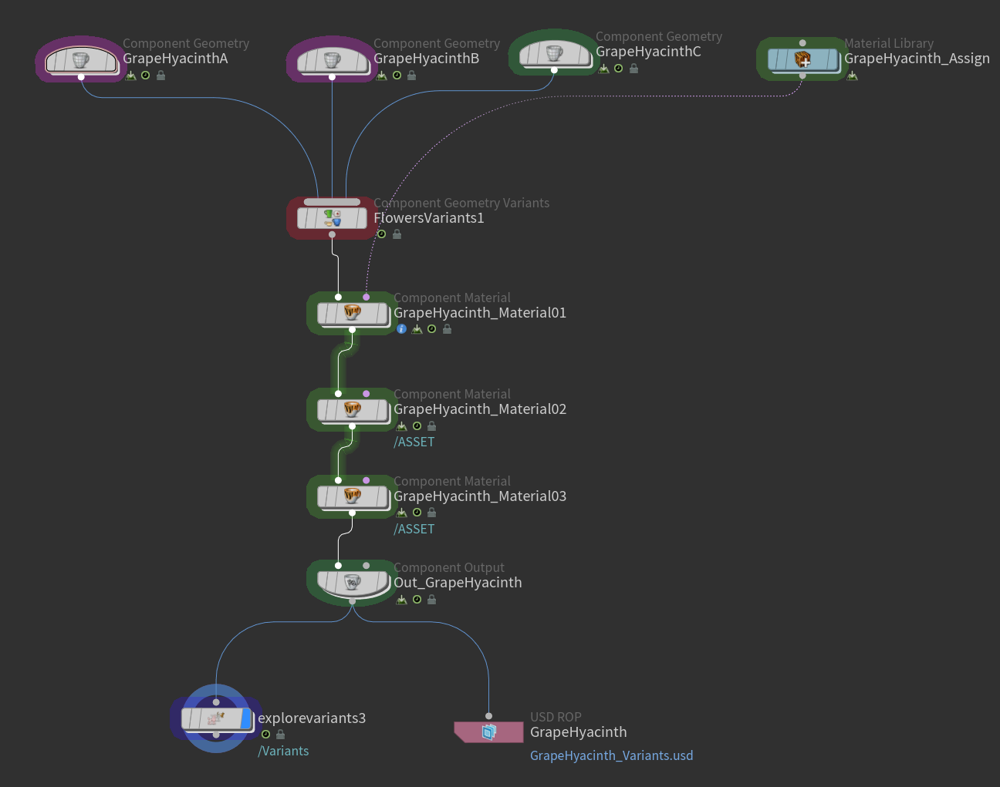
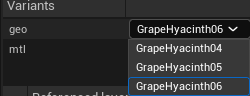
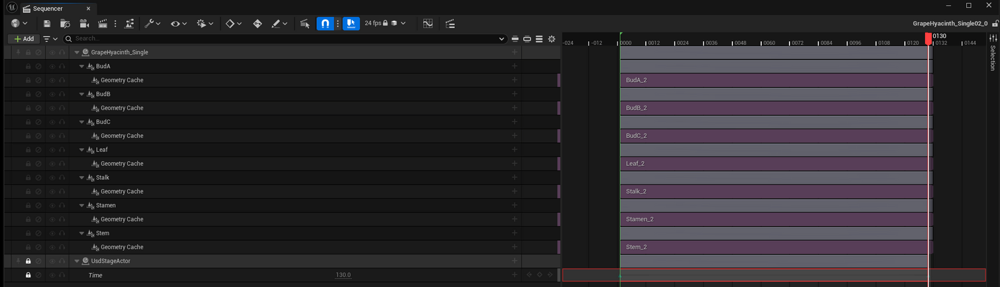
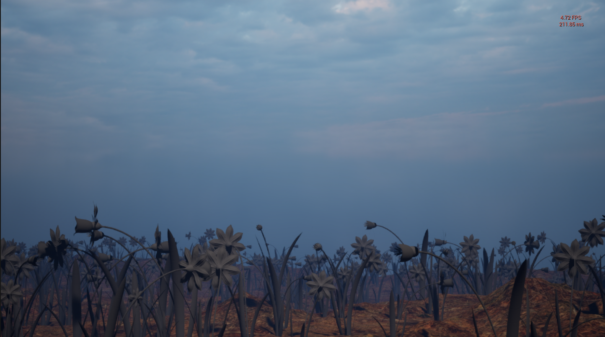
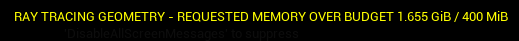

← 部落格 × Special Project | PART2


第 5 週
第 5 週計畫：
-
在 Houdini 中測試有動畫的 USD Variants
-
測試把有動畫的 USD 匯入 Unreal
USD 材質（Houdini 到 Unreal）
動畫網格
接著我用這種材質指定方式，把動畫網格匯入 Unreal。問題一樣：材質仍然沒有自動指定到網格上。

Houdini Variants
Unreal 中的 USD 動畫問題
另一個問題是，把有動畫的葡萄風信子匯入 Unreal 後，動畫出現閃爍破綻；在 USD Stage Editor 中切換 variants 時，動畫也會消失，和上學期在 Unreal 測試時的問題一樣。不過在 USD Actor Editor 中，variant 的網格和材質都能正確顯示。

另一個嘗試是用兩種方法輸出單一動畫 USD 檔：Component Geometry 和直接輸出。結果用 Component Geometry 的沒有指定材質，動畫也有破綻；直接輸出的 MaterialX 仍然無法自動指定，但動畫是正確的。
Component Geometry
直接輸出
直接輸出 USD 檔時，每個材質都有自己的幾何快取。

Houdini 與 Unreal 中的水仙花 Instance
接著我試著把有動畫的水仙花匯入 Unreal。水仙花仍然沒有材質，FPS 也很低，大約 10，還出現警告：「Ray Tracing Geometry — Requested memory over budget 1.655 GiB / 400 MiB.」


用 Level Sequencer 播放動畫時，我發現了幾個問題。首先，打開 Level Sequence 要花很久；播放動畫時還會掉影格。